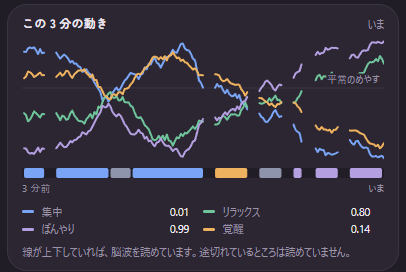

1MiMiPiko とは
MiMiPiko は、頭につけた電極から読み取った「いまの状態」—— 集中・リラックス・ぼんやり など——を VRChat のアバターに 反映するデスクトップアプリです。起動しておけば、センサーへの接続から VRChat への送信まで自動で動きます。設定項目はほとんどありません。
センサーはおでこの電極 1 つと両耳の電極で 構成されています。読み取りの質は電極の接触で決まるため、この 3 点が きちんと肌に触れていることが重要です。
必要なもの
- MiMiPiko センサー本体と電極
- Windows PC（本アプリをインストール済みのもの）
- Wi-Fi（2.4 GHz 帯）
- USB ケーブル（初回セットアップ時のみ）
2初回セットアップ（Wi-Fi の書き込み）
センサー本体に Wi-Fi の接続情報を書き込みます。必要なのは最初の 1 回だけで、 以降は電源を入れれば自動で接続されます。
- センサー本体を USB ケーブルで PC に接続します。
- アプリ右上の「USB セットアップ」を開きます。デバイスは自動で検出されます。
- ウィザードに沿って、接続する Wi-Fi を一覧から選び、パスワードを入力します。 接続確認まで進めば完了です。
- USB ケーブルを外します。以降の通信は Wi-Fi 経由です。

3基本的な使い方
- センサー本体の電源を入れ、電極を装着します（おでこ 1 点・両耳）。
- アプリを起動します。前回接続したセンサーへ自動で再接続されます （「つながっています」表示）。
- 「装着」メーターが「よさそう」になるよう、電極の位置を調整します。
- 起動から約 30 秒は「準備中」表示です。判定の準備が整うと 状態表示に切り替わります。
- 「VRChat に送る」をオンにします。送信先は自動検出されるため、 IP やポートの設定は不要です。


4画面の見方
接続と装着

左がセンサーとの接続状態、右が電極の接触状態です。 装着メーターの表示は次のとおりです。
- よさそう：問題ありません
- ずれているかも：電極の位置を調整してください
- 直してください：電極が肌から浮いています。おでこと両耳の電極をつけ直してください
- 確認中：接続前、またはデータが届き始める前の表示です。長く続く場合は接続を確認してください
「自動でつなぐ」を有効にしておくと、起動時に自動で接続します。 「やめる」で切断すると自動再接続も止まります。再接続は「つなぐ」で行います。
状態表示

中央に現在の状態が表示されます。表示は次の 5 種類です。
| 表示 | 意味 |
|---|---|
| 集中 | 何かに集中して取り組んでいる状態 |
| リラックス | 起きたまま落ち着いている状態 |
| ぼんやり | 注意が緩み、ぼーっとしている状態 |
| 覚醒 | 頭や体に力が入り、活動水準が高い状態 |
| 平常 | いつもどおりの状態 |
「—」と「装着を確認してください」が出ているときは電極の接触不足です。 つけ直すと復帰します。
この 3 分の動き

直近 3 分間の各状態のスコア（0〜1）を折れ線で表示します。凡例の数値が 現在のスコアで、いちばん高い状態が上の状態表示に出ます（「平常」は 固定値のため、基準線として灰色で引かれています）。下の色帯は、そのとき 確定していた状態の履歴です。
線が上下していれば読み取りは正常に動いています。線が途切れている区間は、 電極の接触不足などで読み取れていなかった時間です。
VRChat に送る

オンにすると、読み取った状態が毎秒 VRChat へ送信されます。 送信先は自動検出のため、入力項目はありません。
5基準の記録（リラックス判定の個人調整）
脳波の出方には個人差があります。リラックスしているのに表示へ反映されないと 感じる場合は、基準の記録を実行してください。閉眼安静時の 1 分間を基準として記録し、リラックス判定をあなたに合わせます。
- 電極を装着し、接続された状態で「記録する」を押します。
- 目を閉じて 1 分待ちます。
- 終了は音で通知されます。上昇音 2 回なら成功、低いブザーなら失敗です。 失敗した場合は装着を直して再実行してください。

6トラブルシューティング
※アプリ上の表記では、センサーを「ヘッドセット」と呼びます。
| 画面の表示 | 意味と対処 |
|---|---|
| ヘッドセットを探しています… | センサーが見つかっていません。本体の電源と、PC と同じ Wi-Fi に つながっているかを確認してください。見つかれば自動で接続されます。 |
| 接続していません | 「やめる」で切断した状態です。「つなぐ」で再接続します。 |
| ヘッドセットが複数見つかりました | 同じネットワークに複数台あります。誤接続を防ぐため自動では選ばないので、 一覧から自分の機体を選んでください。 |
| 「準備中」のまま変わらない | 起動後 30 秒程度は正常です。それ以上続く場合は、装着メーターが 「よさそう」になっているか確認してください。 |
| 状態が「—」になる | 電極の接触不足です。おでこと両耳の電極をつけ直してください。 |
| 送れていません（VRChat） | VRChat が起動しているか、OSC が有効か（Options → OSC → Enabled）を 確認してください。 |
| 記録できませんでした（基準の記録） | 記録中に電極の接触不足、または切断が発生しました。装着と接続を確認して 再実行してください。 |